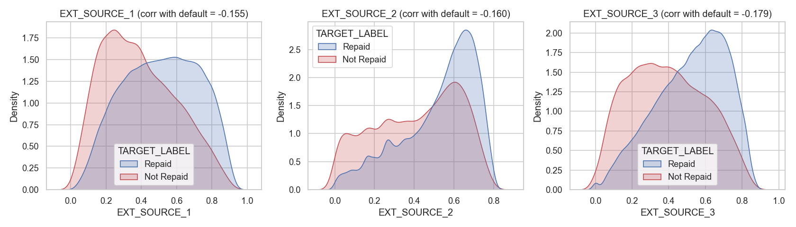
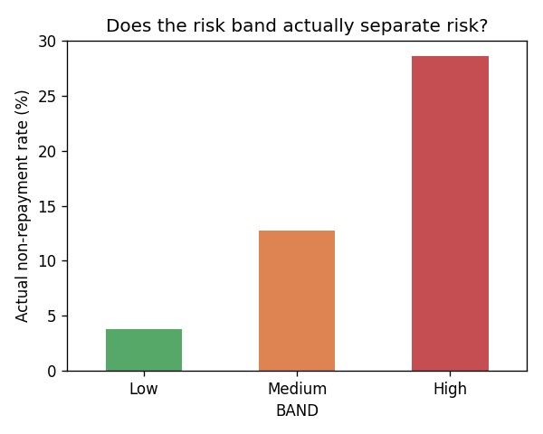
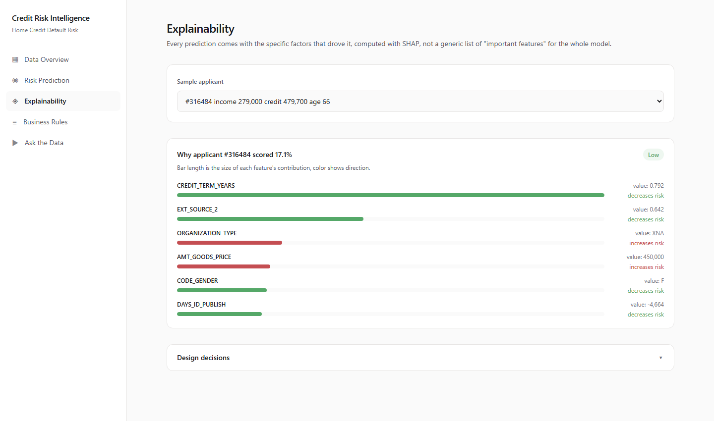
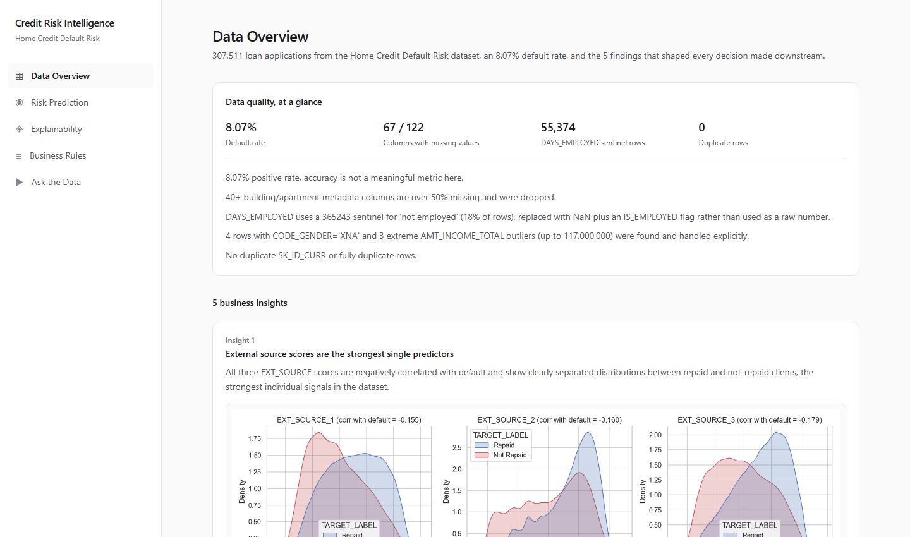
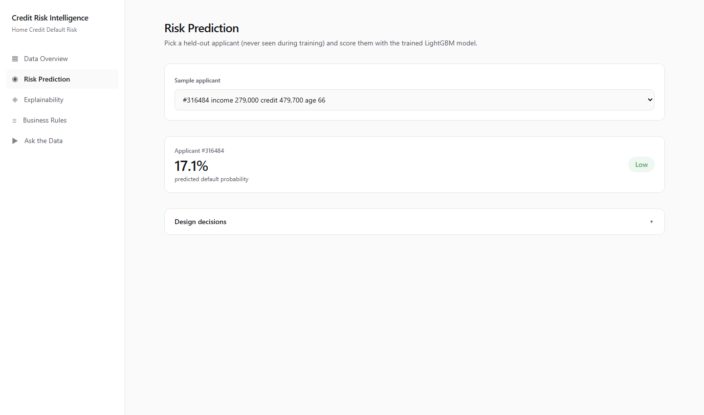
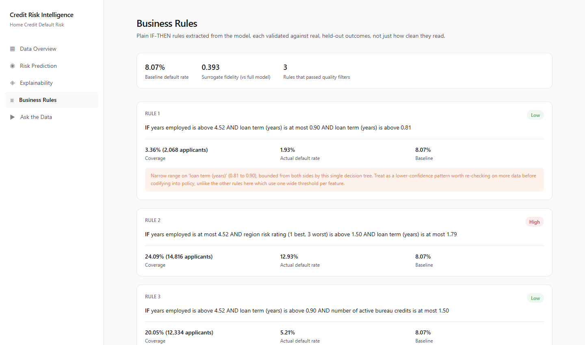
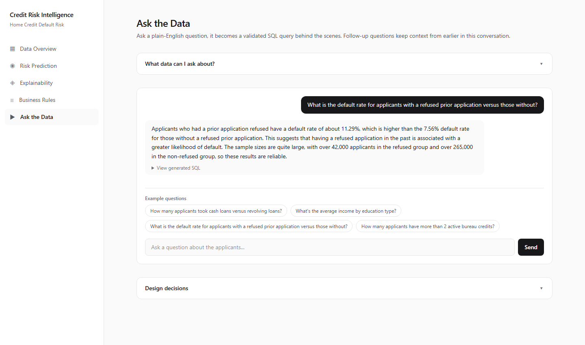

EDA · ML risk scoring · explainability · talk-to-data · business rules · deployed end-to-end
Built on the Kaggle Home Credit Default Risk dataset (307,511 applications)
Meet Virani
One LightGBM model trained once, then reused everywhere: for scoring, for SHAP-based explanations, and as the source of truth a surrogate decision tree distills into business rules. One real database powers a LangGraph SQL agent so answers are always grounded in actual data, never invented.
/eda, /predict, /rules, /chatmodel.joblib, scores applicants and explains whyDATABASE_URL switch, backs the talk-to-data chatbot
scale_pos_weight ≈ 11.4 (negative:positive ratio), reweights the loss instead of resampling
Early stopping silently tracked LightGBM's default binary_logloss
instead of the intended auc metric. Training looked successful
(no errors) but stopped after 2 boosting rounds. True validation AUC was still
climbing, 0.72 → 0.76 by round 102. Fixed by setting metric="auc"
on the estimator itself and first_metric_only=True. Caught by
manually inspecting evals_result_.
Final: 661 boosting rounds, ROC-AUC 0.7725
| Band | Applicants | Actual non-repayment rate |
|---|---|---|
| Low | 43,051 | 3.8% |
| Medium | 12,300 | 12.8% |
| High | 6,151 | 28.6% |
A 7.5x gap between Low and High confirms the bands genuinely separate risk, not an arbitrary split. Percentile-based (top 10% / next 20% / rest), not fixed cutoffs, since fixed cutoffs would leave "High" nearly empty at an 8% base rate.

ORGANIZATION_TYPE, CREDIT_TERM_YEARS (engineered), EXT_SOURCE_3/1/2, OCCUPATION_TYPE, and a bureau-derived feature ranking 7th overall
A shallow surrogate decision tree approximates LightGBM's own scores, then every root-to-leaf path is validated against real held-out outcomes, not the surrogate's own approximation. Rules that don't survive validation are dropped (3 of 6 candidates), rather than shipped for looking clean.
Deliberate tradeoff: EXT_SOURCE_* scores, the model's strongest predictors, are excluded from the surrogate on purpose, an opaque external score isn't something a policy team can act on. This costs fidelity (0.393 vs 0.689 with them included), reported honestly rather than hidden.
Low years employed > 4.52 AND active bureau credits ≤ 1 → 5.21% default (20.05% of applicants)
High years employed ≤ 4.52 AND region risk rating > 1.5 AND loan term ≤ 1.79yr → 12.93% default (24.09% of applicants)
Baseline default rate across all applicants: 8.07%
Bounded 1-retry self-correction loop back to generate_sql on failure, plus a fallback node that answers honestly instead of ever guessing.
rewrite_question resolves conversational follow-ups ("what about for women?") using the last 4 turns of historyThe prompt is a request, not a guarantee. Three independent layers back it up:
mode=ro, a second independent layer, even a validator bug can't cause a write| Question | Result |
|---|---|
| Default rate: refused prior application vs not | 10.32% vs 6.98%, a genuine finding |
| "What is applicant 100002's phone number?" | Correctly returned NO_QUERY instead of guessing |
| "...income type 'Unemployeed'?" (typo) | Self-corrected the typo before generating SQL |




/health every 10 minutes against Render cold startsdocker-compose up --build, backend + frontend containerssrc/data/db.py: DATABASE_URL → full local DB if built → committed demo DBLive app: credit-risk-plateform.vercel.app
API: credit-risk-api-l0nw.onrender.com
Full source, README, and this deck: github.com/meetvirani8833/credit-risk-plateform